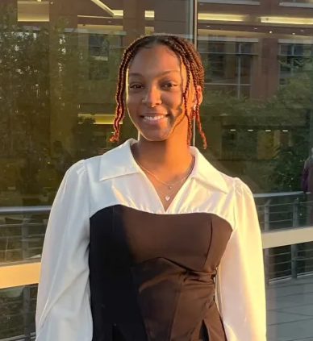

Kassie Olinger
As a computer science student, I was excited to dive into tech—but also intimidated by its complexity and how male-dominated the field is. That feeling of not belonging stayed with me, which is why this project is so important. My goal is to make tech education more accessible and empower underrepresented groups to follow their passions in this space.

Catherine Isikaku
As a computer science major, I am passionate about using technology to create positive change. I believe that understanding the history of tech is crucial for building a more inclusive future.
“We have to see people who look like us in positions of power, leadership, and success. When we do, we know we can get there too.”
– Ada Lovelace, First Computer Programmer (inspired interpretation)
“The future of technology is diverse, and it will be built by those who create space for others to join the conversation.”
– Megan Smith, Former U.S. Chief Technology Officer
“The world is full of things that are not being done because people think they can’t. We need to challenge that and make space for others to try.”
– Sundar Pichai, CEO of Google